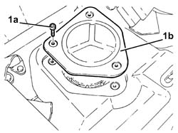
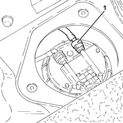
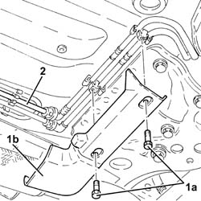
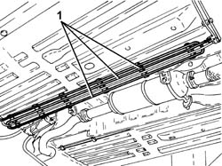

1040B56 fuel return line - r r
- Path
- Procedures > 10 ENGINE > 1040 FUEL TANK AND PIPES > 1040B fuel supply/return circuit pipe > 1040B56 fuel return line - r r
- Kind
- repair procedure (removal / refitting; the operation number is the code)
- Applies to
- engines: 1.9 JTD 16V; all production periods
- Interactive page
- https://sloeber94.github.io/elrnDB-a147/en/#/3025087
Applies to: engines: 1.9 JTD 16V; all production periods
 Removing
Removing
 Refitting
RefittingPosition the vehicle on the ramp.
Working from inside the vehicle, fold down the rear seat cushion and move the soundproofing trim.
1. Undo the bolts (1a) and remove the access cover (1b) to the immersed pump assembly complete with gauge.

Applies to: engines: 1.9 JTD 16V; all production periods
1. Disconnect the rapid connector for the rear fuel return pipe, immersed pump assembly complete with gauge side.

Applies to: engines: 1.9 JTD 16V; all production periods
1. Undo bolts (1a) and remove protection (1b).
2. Disconnect the rapid attachment for the rear fuel return pipe, front fuel return pipe side.

Applies to: engines: 1.9 JTD 16V; all production periods
1. Release the rear fuel return pipe from the underbody fastenings and remove it.

Applies to: engines: 1.9 JTD 16V; all production periods
Refitting
RemovingPlace the rear fuel return pipe in position and locate it on the underbody fastenings.
Connect the rapid connector for the fuel return pipe, front fuel return pipe side.
Place the protection back in its housing and secure it using the bolt.
Connect the rapid attachment for the rear fuel supply pipe, immersed pump assembly complete with gauge side.
Fit the access cover to the submerged pump assembly complete with gauge and secure it using the bolts.
Refit the soundproofing trim.
Refit the rear seat cushion.
Remove the car from the ramps.